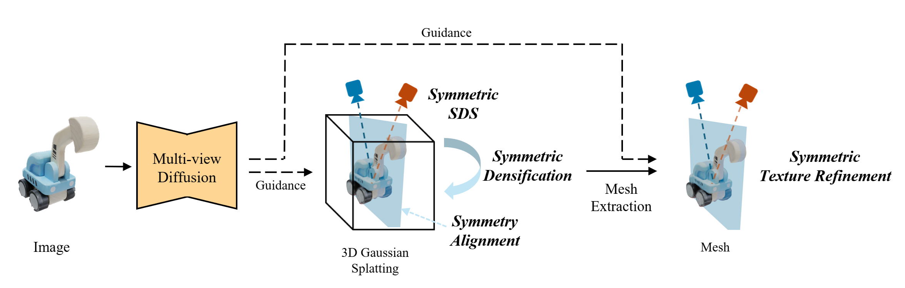

Symmetry is a ubiquitous and fundamental property in the visual world, serving as a critical cue for perception and structure interpretation. This paper investigates the detection of 3D reflection symmetry from a single RGB image, and reveals its significant benefit on single-image 3D generation.
We introduce Reflect3D, a scalable, zero-shot symmetry detector capable of robust generalization to diverse and real-world scenarios. Inspired by the success of foundation models, our method scales up symmetry detection with a transformer-based architecture. We also leverage generative priors from multi-view diffusion models to address the inherent ambiguity in single-view symmetry detection. Extensive evaluations on various data sources demonstrate that Reflect3D establishes a new state-of-the-art in single-image symmetry detection.
Furthermore, we show the practical benefit of incorporating detected symmetry into single-image 3D generation pipelines through a symmetry-aware optimization process. The integration of symmetry significantly enhances the structural accuracy, cohesiveness, and visual fidelity of the reconstructed 3D geometry and textures, advancing the capabilities of 3D content creation.
Figure 1. Overview of Reflect3D, our zero-shot single-image symmetry detector. Top: Our transformer-based feed-forward symmetry detector predicts symmetry planes from a single RGB image. Bottom: Our multi-view symmetry enhancement pipeline leverages multi-view diffusion to resolve the inherent single-view ambiguity in symmetry detection. Aggregating symmetry predictions from multiple synthesized views results in more precise and comprehensive symmetry predictions.
Figure 2. Our symmetry-aware 3D generation pipeline. Building on DreamGaussian, we integrate the detected symmetry through three steps, namely, symmetry alignment, symmetric SDS optimization, and symmetric texture refinement.
Reflect3D achieves better generalization and precision in single-image symmetry detection than the baseline NeRD.
We achieve better performance in single-image 3D generation compared to our baseline DreamGaussian. Leveraging detected symmetry, our method avoids missing details and corrects geometric errors. Meanwhile, we greatly improve the texture and geometric quality of the unobserved object backside.
Each of the four components in our pipeline is critical to achieving high-quality geometry and texture in single-image 3D generation.
Our method accommodates asymmetric details by encouraging symmetry without strictly enforcing it. Our pipeline effectively detects symmetry and generates high-quality 3D meshes for these asymmetric objects.